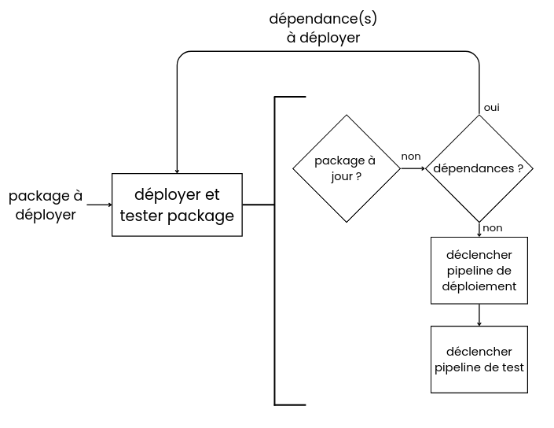
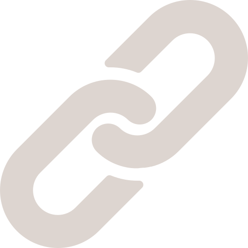
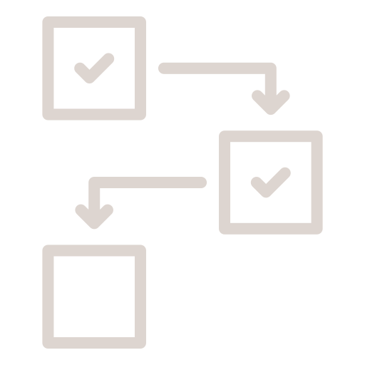

J'ai lors de mes 2e et 3e années de BUT informatique réalisé un stage suivi d'une alternance au sein de Nokia, au site de Lannion.
Stage - devOps CI/CD
Lors de ma 2e année de BUT, j’ai intégré une équipe agile travaillant sur un projet de solution cybersécurité pour un stage de 4 mois. Le logiciel est constitué de différents packages, chaque package gérant un usecase précis (gestion d’un incident = détection, remédiation).
Ma mission lors de ce stage consistait à proposer une solution pour que, lors d’un merge (ajout/modification d'un usecase) sur le dépôt gitlab du projet :
1. Les packages affectés par le merge soient identifiés
2. Ils soient déployés à travers des pipelines spécifiques
3. Des tests robot framework soient exécutés pour tester les packages modifiés

Pour cela j'ai ajouté un job à la pipeline du projet qui récupère les n° de version des packages après le commit, et les compare avec les n° de version déployés pour identifier les packages à mettre à jour. Un script déclenche ensuite les pipelines nécessaires au déploiement et tests, en gérant les dépendances entre packages.
 Relier différents dépôts
Les tests, packages à déployer et usecases à identifier se trouvent tous sur des dépôts différents, j'ai donc du réussir à les relier à ma solution sans confusion.
 Gérer les dépendances
Certains packages ont une dépendances vers d'autres packages, et leur déploiement peut échouer si la dépendance n'est pas déployée avant. Ma solution déploie donc les dépendances avant le package actuel, tout en prenant en compte le fait que la dépendance peut avoir une dépendance, qu'une même dépendance ne doit pas être déployée plusieurs fois...
Technologies


Alternance - Threat Simulation
Je réalise lors de ma 3e année de BUT une alternance d’un an à Nokia. Ma mission consiste à implémenter une plateforme de simulation d'attaque open source au sein d’une infrastructure interne, et de développer les composants nécessaires pour relier la plateforme aux produits Nokia. Ainsi, cette plateforme pourra être utilisée pour facilement lancer des démos spécifiques sans l’intervention d’un expert technique.
La plateforme et les machines cibles sont différentes VM Linux qu'il a fallu configurer apropriamment. Le projet étant nouveau, j'ai mis en place un environnement de développement et production, et un pipeline CI pour automatiser le déploiement de mes composants. Pour des besoins techniques, j'ai également installé un docker hub ainsi qu'un runner gitlab sur une machine dédiée. Les composants développés ont différentes fonctions, comme s'assurer qu'une attaque lancée depuis la plateforme a été détectée par le produit de sécurité, ou alors d'exécuter plus de types d'attaques.
technologies utilisées